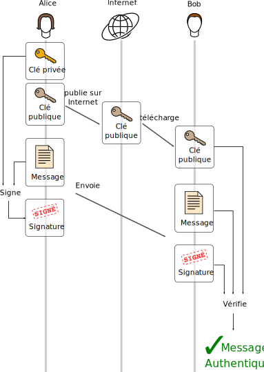
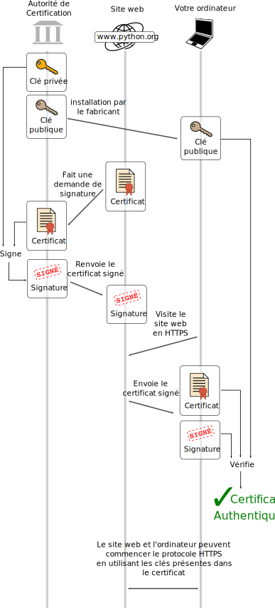

TP de Cryptographie: Signatures Numériques avec RSA
Version du 2020-11-28 10:43:24
Signatures Numériques
Une signature numérique est un petit morceau de données
qui garantit l'authenticité d'un message.
Plus exactement, une signature prouve que
la personne ayant rédigé ce message
est en possession d'une certaine clé secrète.
Concrètement, si Alice veut envoyer un message M à Bob et veut que Bob puisse être sûr de recevoir le bon message, Alice peut faire la chose suivante:
créer une clé de signature K
s'assurer que personne à part elle et Bob ne connaisse la clé
créer une signature S à partir du message M et de la clé K
envoyer le message M avec sa signature S à Bob
Bob peut vérifier que la signature a été créée pour le message M et avec la clé K. Si Bob est certain que personne à part Alice et lui ne connaissent la clé K, alors il peut être certain que le message M a bien été envoyé à Alice.
La méthode de signature numérique RSA, que l'on va étudier dans ce TP, est dite à clé publique (on peut aussi parler de méthode asymétrique). Cela veut dire que la clé permettant de créer des signatures n'est pas la même que celle permettant de vérifier des signatures. Dans notre exemple, cela veut dire que Alice peut rendre sa clé de vérification publique (tout le monde peut la voir), pour que tout le monde puisse la télécharger et vérifier que les messages qu'ils reçoivent censés venir d'Alice n'ont pas été écrits par quelqu'un d'autre. La clé de signature par contre, elle, doit rester secrète: quelqu'un qui réussirait à voler cette clé serait capable de signer des messages au nom d'Alice sans son accord !

Premiers pas avec RSA
Signature
Dans la méthode de signature RSA on ne manipule que des nombres, donc pour l'instant nos « messages » ne seront que des nombres. On verra plus tard comment faire avec de « vrais » messages.
Ouvrez un terminal python et créez une variable M contenant le nombre 42:
M = 42
M sera notre « message », que Alice veut signer avec sa clé de signature, appelée aussi clé privée.
La clé privée d'Alice se compose de deux nombres:
l'exposant privé, noté \(D\)
et le modulus, noté \(N\)
Entrez dans votre terminal Python les valeurs suivantes pour \(D\) et \(N\) :
D = 107
N = 187
Voici comment Alice crée la signature \(S\) du message \(M\) avec sa clé:
\begin{equation*}
S = M^D \bmod N
\end{equation*}
Faites faire ce calcul à Python en exécutant la commande suivante:
S = pow(M, D, N)
Note: on pourrait aussi écrire S = M**D % N
mais plus tard on utilisera des grands nombres
et seule la fonction pow sera assez efficace pour cela.
Vous pouvez demander à l'interpréteur Python de vous afficher la valeur de S
en appelant simplement la variable S, c'est à dire en tapant la lettre « S » et appuyant sur « Entrée ». Vous devriez obtenir la valeur 70:
>>> S
70
Vérification de la Signature
Pour pouvoir vérifier les messages signés par Alice, Bob doit avoir téléchargé la clé publique d'Alice.
Cette clé publique est constituée d'un exposant public noté \(E\) et du modulus déjà présent dans la clé privée, \(N\). La seule partie véritablement « privée » de la clé privée est \(D\) (souvenez-vous, la clé privée est \((D, N)\)), mais \(N\) est nécessaire à la fois pour la signature et pour la vérification.
Voici l'exposant public d'Alice, entrez-le dans votre terminal Python:
E = 3
Bob peut maintenant vérifier l'authenticité du message M qu'il a reçu, c'est à dire qu'il peut vérifier que la signature S est bien une signature de M faite par quelqu'un qui connaît la clé privée d'Alice (donc, à priori, par Alice).
Il suffit à Bob de calculer ceci:
\begin{equation*}
M_2 = S^E \bmod N
\end{equation*}
Puis de vérifier que \(M_2\) soit égal au message \(M\).
Faites ces deux opérations dans votre terminal Python:
M_2 = pow(S, E, N)
if M_2 == M:
print('signature valide: message authentique')
else:
print('SIGNATURE INVALIDE: MESSAGE NON AUTHENTIQUE !!!')
Python devrait écrire signature valide: message authentique.

Fonctions Python pour la Signature et la Vérification
Ouvrez le fichier ma_solution.py. Copiez-y le code suivant:
def signer_rsa(M, D, N):
S = #[À REMPLACER]#
return S
def signature_rsa_est_valide(M, S, E, N):
'''renvoie « True » si S est une signature du message M
faite avec la clé privée correspondant à (E, N);
sinon, renvoie « False »'''
M_2 = #[À REMPLACER]#
if M_2 == M:
return #[À REMPLACER]#
else:
return #[À REMPLACER]#
Remplacez les blocs #[À REMPLACER]# par le code nécessaire pour que les fonctions aient l'effet attendu.
Ça ne devrait pas être très difficile: on vient de voir comment calculer S et M_2, et la documentation de la fonction signature_rsa_est_valide explique ce que doit renvoyer la fonction dans chaque cas.
Maintenant, testez le bon fonctionnement de vos fonctions:
lancez votre fichier ma_solution.py
puis dans le terminal exécutez les commandes suivantes:
signature_rsa_est_valide(42, 70, 3, 187)
signature_rsa_est_valide(45, 70, 3, 187)
La première commande devrait renvoyer True
car ce sont les valeurs de M, S, E et N créées plus haut.
La seconde devrait renvoyer False car on a modifié le message original, 42, en 45.
On a donc bien réussi à détecter que le message avait été modifié !
Testons aussi notre fonction de signature en signant un message différent.
Mettez un nouveau nombre dans la variable M. Celui que vous voulez, du moment qu'il est compris entre 1 et \(N-1\) (rappel: \(N = 187\)). Créez aussi une variable faux_M qui contient un autre nombre pris au hasard entre 1 et \(N-1\).
Puis exécutez les commandes suivantes
(on doit assigner D et N de nouveau
parce qu'on a relancé Python
et ils ne sont pas assignés dans ma_solution.py):
System Message: ERROR/3 (/tmp/tp-rsa-instructions.rst, line 157)
Error in "code" directive:
maximum 1 argument(s) allowed, 20 supplied.
.. code:: python
D = 107
N = 187
S = signer_rsa(M, D, N)
signature_rsa_est_valide(M, S, E, N)
signature_rsa_est_valide(faux_M, S, E, N)
À nouveau, le premier appel à signature_rsa_est_valide devrait renvoyer True parce que le message est bien celui qu'on a signé,
et le deuxième appel avec un message modifié devrait renvoyer False.
Génération de clés
Pour l'instant les nombres \(E\), \(D\) et \(N\)
qui constituent les clés de signature et de vérification
ont été générés pour nous
et nous ont été donné.
Maintenant, nous allons voir comment générer nous-même notre paire de clés RSA.
Voici comment générer une paire de clés RSA
(c'est à dire une clé publique et sa clé privée correspondante):
On choisit un exposant public \(E\).
On choisit deux nombres premiers \(P\) et \(Q\)
Le modulus \(N\) de notre paire de clé sera: \(N = P \times Q\)
on doit ensuite vérifier que \(E\) est premier avec le nombre \(\varphi (N) = (P-1)\times (Q-1)\)
Quelques explications pour les curieux:
\(\varphi (N)\) se lit « phi de N »
et représente la « fonction indicatrice d'Euler »
(voir Wikipedia: Indicatrice d'Euler);
Deux nombres sont dit « premiers entre eux »
si leur seul diviseur commun est 1.
Ce test est nécessaire pour permettre l'étape d'après ;
pour ne pas compliquer les choses
on ne vas pas expliquer pourquoi.
Enfin on trouve l'exposant privé \(D\)
en calculant l'inverse de \(E\) modulo \(\varphi (N)\),
c'est à dire tel que
\(E\times D \bmod \varphi (N) = 1\)
(ce qui équivaut à ce que \(E\times D - 1\) soit un multiple de \(\varphi (N)\)).
On a ainsi trois nombres \(E, D\) et \(N\) tels que
pour tout nombre \(M\) compris entre 1 et \(N-1\),
on ait:
\begin{equation*}
(M^D)^E \bmod N = M
\end{equation*}
C'est cette propriété qui fait que la signature RSA fonctionne.
Rappelez-vous, on a \(S = M^D \bmod N\).
On a alors:
\begin{align*}
S^E \bmod N &= (M^D \bmod N)^E \bmod N \\
&= (M^D)^E \bmod N \\
&= M
\end{align*}
Ce qui est ce que l'on vérifiait pour la vérification de la signature.
La démonstration de cette propriété est intéressante,
mais pour ne pas trop rallonger le TP on ne la verra pas ici.
Elle repose sur le théorème d'Euler
(voir Wikipedia: Théorème d'Euler (arithmétique)).
En pratique on ne va pas prendre E au hasard
mais prendre une valeur fixe, disons \(E = 3\).
Il se trouve que ça ne rend pas le système moins sécurisé,
donc c'est une pratique courante.
On veut écrire une fonction qui génère une paire de clés RSA
suivant la méthode que l'on vient de décrire.
Voici le code à copier à la fin de votre fichier ma_solution.py:
# voici des fonctions fournies par le fichier lib_tp_rsa.py
# que l'on importe pour les utiliser dans notre fonction "generer_cle_rsa"
# voir leur documentation dans le fichier lib_tp_rsa.py
from lib_tp_rsa import generer_premier, sont_premiers_entre_eux, inverse_modulo
def generer_cle_rsa():
"génère une paire de clés RSA"
E = 3
nombre_max_tentatives = 5
for i in range(nombre_max_tentatives):
P = #[À REMPLACER]#
Q = #[À REMPLACER]#
N = #[À REMPLACER]#
phi_N = #[À REMPLACER]#
if ( P != Q and #[À REMPLACER]# ):
D = #[À REMPLACER]#
# "return" va nous faire sortir de la fonction
# et donc de la boucle "for" aussi
return (E, D, N)
# si on arrive là c'est que toutes les tentatives ont échoué
# (on n'a jamais atteint le "return")
# donc on renvoie une Erreur avec "raise Exception()"
raise Exception('toutes les tentatives ont échoué')
Encore une fois vous devez remplacer les blocs #[À REMPLACER]#.
Pour vous simplifier la tâche, un fichier lib_tp_rsa.py
contient déjà des fonctions permettant de :
générer des nombres premiers aléatoires (fonction generer_premier)
vérifier que deux nombres sont premiers entre eux (fonction sont_premiers_entre_eux)
calculer l'inverse d'un nombre modulo un autre nombre
(fonction inverse_modulo)
Chaque fonction a une documentation détaillée
qui devrait vous permettre de comprendre comment l'utiliser.
Quand vous pensez avoir le bon code pour la fonction generer_cle_rsa,
lancez votre fichier ma_solution.py et exécutez les commandes suivantes:
(E, D, N) = generer_cle_rsa()
M = 135 # ou n'importe quel autre nombre entre 1 et N-1
faux_M = 28 # un nombre différent de M
S = signer_rsa(M, D, N)
signature_rsa_est_valide(M, S, E, N)
signature_rsa_est_valide(faux_M, S, E, N)
Signer des « vrais » messages
En pratique, les messages à signer sont de la donnée, pas des nombres. Pour les signer, on utilise un « encodage » qui transforme cette donnée en nombre. À nouveau, on vous fourni dans le fichier lib_tp_rsa.py la fonction encoder_msg_en_nombre qui fait cet encodage.
Copiez et complétez la fonction suivante dans votre fichier ma_solution.py. Vous allez devoir faire appel à la fonction signer_rsa que vous avez déjà écrite dans ce même fichier.
from lib_tp_rsa import encoder_msg_en_nombre
def signer_message_rsa(msg, D, N):
M = encoder_msg_en_nombre(msg, N)
S = #[À REMPLACER]#
return S
Faites de même pour cette fonction qui vérifie un message plutôt qu'un nombre:
def signature_message_rsa_est_valide(msg, S, E, N):
M = #[À REMPLACER]#
if #[À REMPLACER]#:
return True
else:
return False
On va encore une fois tester nos fonctions rapidement dans la console:
(E, D, N) = generer_cle_rsa()
msg = "Bien sûr que oui !"
faux_msg = "Bien sûr que non !"
S = signer_message_rsa(msg, D, N)
signature_message_rsa_est_valide(msg, S, E, N)
signature_message_rsa_est_valide(faux_msg, S, E, N)
Vérifier l'Authenticité des Messages d'une Conversation
Le fichier conversation.json contient des messages d'une conversation entre Alice et Bob. Chaque message est censé être signé. Les clés publiques de Alice et Bob sont dans le fichier clé_publiques_alice_et_bob.json.
On vous fournit dans lib_tp_rsa.py des fonctions qui vont lire les données de ces fichiers et les transformer en variables Python.
Voici comment les utiliser:
from lib_tp_rsa import charger_conversation_depuis_json, charger_cles_depuis_json
liste_messages = charger_conversation_depuis_json('conversation.json')
cles_publiques = charger_cles_depuis_json('cles_publiques_alice_et_bob.json')
La variable liste_messages est une liste dont chaque élément est un dictionaire représentant un message:
>>> liste_messages
[{'expéditeur': 'Alice',
'heure': '10h31',
'texte': 'Salut Bob, ça va ? Dis tu me dois toujours 20€ pour le resto.',
'signature': 3066660173},
{'expéditeur': 'Bob',
'heure': '10h34',
'texte': "Salut. Ah oui c'est vrai. Je peux te faire un virement ?",
'signature': 3191130941},
...
]
Chaque dictionaire peut être accédé par son numéro dans la liste (attention les listes commencent par le numéro zéro en Python, comme dans beaucoup d'autres languages informatiques)
Voici comment on peut accéder aux variables contenues dans cette structure:
>>> liste_messages[0]
{'expéditeur': 'Alice',
'heure': '10h31',
'texte': 'Salut Bob, ça va ? Dis tu me dois toujours 20€ pour le resto.',
'signature': 3066660173}
>>> liste_messages[0]["expéditeur"]
'Alice'
>>> liste_message[0]["texte"]
'Salut Bob, ça va ? Dis tu me dois toujours 20€ pour le resto.'
>>> liste_message[2]["signature"]
1930418289
Quand à la variable cles_publiques,
elle associe un nom d'expéditeur à sa clé publique (E, N):
>>> cles_publiques
{'Alice': [3, 3456413371], 'Bob': [3, 3223205851]}
>>> cles_publiques["Alice"]
[3, 3456413371]
À nouveau, copiez le code suivant à la fin de votre fichier ma_solution.py
et remplacez les blocs #[À REMPLACER]#:
def conversation_authentifiee(liste_messages, cles_publiques):
# cette variable stockera le texte a afficher
resultat = str()
for message in liste_messages:
heure = message["heure"]
exp = message["expéditeur"]
msg = message["texte"]
S = message["signature"]
# réfléchissez: quelle variable contient le nom de l'expéditeur
# dont on a besoin pour récupérer la clé publique ?
E, N = cles_publiques[ #[À REMPLACER]# ]
if #[À REMPLACER]# :
sig_valide = "OK"
else:
sig_valide = "NON VALIDE !!!"
# On ajoute le message au résultat
resultat += f'# {heure} {exp} (signature {sig_valide}):'
# ajoute un retour à la ligne
resultat += '\n'
resultat += msg
resultat += '\n\n'
# on fait un "return" du résultat plutôt qu'un "print",
# c'est une bonne habitude à prendre quand on écrit des fonctions
return resultat
Quand c'est fait, lancez votre fichier ma_solution.py
et exécutez les commandes suivantes:
from lib_tp_rsa import charger_conversation_depuis_json, charger_cles_depuis_json
liste_messages = charger_conversation_depuis_json('conversation.json')
cles_publiques = charger_cles_depuis_json('clé_publiques_alice_et_bob.json')
print(conversation_authentifiee(messages, cles_publiques))
Qu'observez-vous ? Essayez d'expliquer ce qui s'est passé.
Vérifier l'Authenticité de Véritables Certificats sur Internet !
RSA est toujours très utilisé pour sécuriser les communications sur Internet, et en particulier pour authentifier les certificats des sites web.
Quand on va sur un site web,
l'adresse du site commence soit par « http » ou par « https ».
HTTPS est la version sécurisée du protocole HTTP.
Quand votre ordinateur envoie une requête à un site web en utilisant le protocole HTTPS,
le site web commence par envoyer son certificat.
Ce certificat contient principalement la clé publique du site web,
que votre ordinateur devra utiliser pour vérifier l'authenticité des pages web reçues de la part de ce site web.
Mais il y a un problème:
comment être sûr que le certificat que l'on reçoit soit lui-même authentique ?
Si un adversaire a la possibilité de modifier les messages entre le site web et nous, il lui suffit de modifier ce premier message et de remplacer la clé publique par la sienne dans le certificat.
Pour les plus curieux cela s'apelle l'attaque de l'homme du milieu
(voir Wikipedia: Attaque de l'homme du milieu).
La solution est la suivante : votre ordinateur possède déjà les clés publiques d'un certain nombre d'organisations appelées « autorités de certification ». La plupart du temps ces clés ont été installées par le fabricant de votre ordinateur avant de vous le livrer. L'administrateur d'un site web peut alors demander à l'une de ces autorités de lui signer son certificat, et il vous envoie cette signature en même temps que le certificat.
Résumons :
le site web vous envoie son certificat avec sa clé publique
le certificat est signé par une autorité dont vous avez déjà la clé publique
donc le certificat est authentique
donc vous êtes sûr d'avoir la véritable clé publique du site web
donc vous pouvez utiliser cette clé pour vérifier les pages web reçues par ce site web

Assez parlé. Place à la pratique.
Le fichier lib_tp_rsa.py vous fourni la fonction recuperer_certificat qui prend en paramètre le nom de domaine d'un site web et renvoie son certificat (qui est téléchargé via Internet, exactement comme le ferai votre navigateur web) ainsi que le certificat de l'autorité de certification qui a signé ce certificat-là. Voici comment l'appeler et stocker les deux certificats dans des variables séparées :
from lib_tp_rsa import recuperer_certificat
cert_site, cert_autorite = recuperer_certificat("python.org")
Quelques suggestions de noms de domaines qui devraient fonctionner:
python.org
google.com
wikipedia.org
linuxfoundation.org
ubuntu.com
cedricvanrompay.fr
Cette fois-ci c'est pour de vrai : Les certificats que vous récupérez avec cette fonction sont de vrai certificats, les nombres utilisés sont très grands pour des raisons de sécurité, et les certificats stockés dans les variables cert_site et cert_autorite ont une foule de paramètres, fonctions et autres que l'on ne va pas utiliser mais que l'on a laissé pour vous mettre en condition réelles.
Si vous êtes curieux/se vous pouvez exécuter les commandes suivantes :
cert_site.issuer renvoie un objet représentant l'autorité de certification qui a signé le certificat du site. L'objet est à un format un peu spécial qui n'est pas évident à manipuler ou à lire, mais on peut deviner la signification de certaines valeurs.
cert_site.signature_algorithm_oid précise l'algorithme qui a été utilise pour créer la signature. Dans ce TP on ne va que manipuler des signatures faites avec l'algorithme sha256WithRSAEncryption, dans lequel on reconnaît le mot « RSA ».
cert_autorite.public_key().public_numbers() contient les nombres \(E\) et \(N\) de la clé publique de l'autorité. Dans beaucoup de cas le nombre \(E\) sera le même, typiquement 65537, on a déjà dit que c'était une pratique courante. Remarquez la taille impressionnante du nombre \(N\) ! La raison à cela est que RSA n'est sécurisé que si \(N\) est suffisamment grand pour qu'aucun ordinateur ne puisse retrouver les nombres premiers \(P\) et \(Q\) dont il est issu. Cette opération s'appelle la « factorisation » de \(N\). Or il y a eu de très importants progrès dans les algorithmes de factorisation, donc on doit utiliser des moduli de taille de plus en plus grande, ce qui pose un problème de performance.
On va maintenant vérifier l'authenticité du certificat du site internet en utilisant la clé publique contenue dans le certificat de l'autorité de certification.
Copier le code suivant à la fin de votre fichier ma_solution.py
et remplacez l'unique bloc #[À REMPLACER]#:
def verifier_certificat_site(cert_site, cert_autorite):
# la version "à signer" du certificat (notre "message")
# ("TBS" est pour "To Be Signed", "À signer" en anglais)
msg = cert_site.tbs_certificate_bytes
# La signature du certificat du site
S = cert_site.signature
S = int.from_bytes(S, byteorder='big')
# La clé publique de l'autorité que l'on va stocker dans deux variables N et E
N = cert_autorite.public_key().public_numbers().n
E = cert_autorite.public_key().public_numbers().e
# À vous de jouer !
# vous avez déjà codé la fonction qu'il faut utiliser ici,
# il n'y a qu'à l'appeler avec les bons paramètres !
if #[À REMPLACER]# :
return True
else:
return False
Vous pouvez alors vérifier l'authenticité de certificat que vous venez de télécharger:
if verifier_certificat_site(cert_site, cert_autorite):
print('Certificat valide.')
else:
print('CERTIFICAT INVALIDE !!!')
Fin du TP
BONUS: Casser des clés RSA !
Dans cette section bonus,
pour comprendre pourquoi la signature RSA est sécurisée
on va essayer justement de la casser.
On se met dans le rôle d'un attaquant
qui veut pouvoir signer des messages au nom d'Alice
sans l'autorisation d'Alice.
Voici notre stratégie:
Alice a publié sur son site web sa clé publique
constituée des nombres \(E\) et \(N\).
On cherche à calculer l'exposant secret \(D\) de Alice
à partir de ces nombres.
Si on y arrive, on sera alors capable de créer des signatures au nom d'Alice
en utilisant \(D\) et \(N\),
et le tour est joué !
Pour rester concret,
voici la clé publique dont on essaie de retrouver la clé privée:
E = 3
N = 3399130201
Cette clé a été générée tout simplement
en faisant appel à la fonction generer_cle_rsa()
que vous avez du créer pendant le TP,
donc vous pouvez aussi en générer une vous-même
sans regarder la valeur de \(D\).
Donc, on veut retrouver la valeur de \(D\)
correspondant aux nombres précédents.
Regardez plus haut dans le TP comment la valeur de \(D\) était calculée:
c'est l'inverse de \(E\) modulo \(\varphi (N)\).
C'est là que nos problèmes commencent en tant qu'attanquants:
on connaît le nombre \(N\), mais pas \(\varphi (N)\).
Quand on devait générer des clés,
on avait calculé \(\varphi (N)\) en faisant
\((P-1) \times (Q-1)\) où \(P\) et \(Q\) sont les facteurs de \(N\),
mais les nombres \(P\) et \(Q\) ne sont pas rendus publiques
et ne sont pas connus par l'attaquant
(et la raison devrait maintenant être évidente:
donner \(P\) et \(Q\) revient à donner \(D\)).
On a déjà vu plus haut que cette fonction \(\varphi \)
s'appelle la « fonction indicatrice d'Euler ».
Elle correspond à la quantité de nombres entre 1 et \(N\)
qui sont premiers avec \(N\).
On a déjà vu que deux nombres sont premiers entre eux
(on peut aussi dire qu'ils sont « co-premiers »)
quand leur seul diviseur commun est le nombre 1.
Du coup, est-ce qu'on ne peut pas calculer \(\varphi (N)\)
tout simplement à partir de \(N\),
juste en comptant les nombres premiers avec \(N\) un par un ?
La réponse est oui, on peut.
On pourrait faire notre attaque à partir de cette observation,
mais on va prendre une autre approche qui utilise d'avantage des connaissances du lycée,
et qui en plus est plus efficace.
Souvenez-vous,
si on trouve les nombres premiers \(P\) et \(Q\) tels que \(N = P\times Q\),
alos on a \(\varphi (N)\) (car \(\varphi (N) = (P-1) \times (Q-1)\)),
ce qui nous donne \(D\), et on a réussi notre attaque.
Une autre approche consiste donc à trouver les diviseurs de \(N\).
Or comment trouve-t-on les diviseurs d'un nombre \(N\) ?
C'est quelque chose que vous devriez déjà savoir:
on teste chaque nombre pour voir s'il divise \(N\),
sauf qu'on n'a pas besoin de tester tous les nombres jusqu'à \(N-1\).
Il y a une astuce : on peut s'arrêter à ... \(\sqrt{N}\).
Cette astuce fait une sacrée différence:
notre \(N\) est de plusieurs milliards,
alors que sa racine carrée est de « seulement » quelques dizaines de miliers !
Voici notre stratégie pour la factorisation de \(N\):
Voici ce que ça donne en Python,
avec encore des blocs à compléter:
from math import sqrt
def factoriser(N):
for i in range(2, int(#[À REMPLACER]#)):
if #[À REMPLACER]#:
P = i
Q = #[À REMPLACER]#
return P, Q
Avec sqrt qui est la fonction Python qui calcule la racine carrée
(voir `la documentation de cette fonction<https://docs.python.org/3/library/math.html#math.sqrt>`_).
Après avoir copié cette fonction dans votre fichier ma_solution.py
et l'avoir complété,
utilisez-là pour factoriser le nombre \(N\) de la clé que l'on essayait de casser,
et stocker le résultat dans deux variables P et Q:
(P, Q) = factoriser(N)
À partir de là, ré-utilisez votre code du TP pour re-calculer \(D\)
maintenant que vous avez \(P\) et \(Q\).
Vous devriez obtenir la valeur suivante pour \(D\):
D = 2266009003
Mais alors ... est-ce que la signature RSA est sécurisée ou pas ?
On vient de casser une clé RSA, après tout !
La réponse est : RSA est sécurisé quand on utilise des clés assez grandes.
Quand on génère des clés RSA avec des nombres \(P\) et \(Q\)
suffisamment grand (donc \(N\) est grand aussi),
les opérations que doivent effectuer les « gentils »
(signature et vérification)
sont un peu plus longues à effectuer.
Mais les opérations nécessaires pour casser une clé RSA
(en gros, la factorisation de \(N\))
demandent, elles, beaucoup plus de temps.
Vous allez pouvoir vous en rendre compte vous-même.
Il se trouve que la fonction generer_premier
fournie par la bibliothèque lib_tp_rsa.py
peut prendre un paramètre optionel
indiquant la taille des nombres premiers qui doivent être générés.
La taille est donnée en bits,
donc generer_premier(22) va générer un premier de 22 bits de longueur.
Par défaut, quand votre code appelait cette fonction sans paramètres,
les nombres premiers générés étaient de longueur 16 bits.
Faites la chose suivante:
Vous devriez remarquer un tout petit délai
entre le moment ou vous appelez la fonction de factorisation
et le moment ou vous avez la réponse.
Refaites la même procédure mais avec P et Q de 24 bits de long.
Cette fois-ci le délai devrait être beaucoup plus conséquent.
Vous pouvez essayer avec des premiers de 26 voir 28 bits de long
mais cela risque d'être très long.
Voilà donc pourquoi casser de véritables clés RSA
n'est pas aussi simple que ce que l'on vient de voir,
et pourquoi RSA est en fait sécurisé:
quand la puissance de calcul des ordinateurs augmente tellement
que casser les clés actuelles risque de devenir faisable,
on augmente très légèrement la taille des clés:
RSA devient légèrement plus long à utiliser mais beaucoup plus difficile à casser.
Pour information, la taille de clé recommandée aujourd'hui pour RSA
est d'avoir un \(N\) de ... 3072 bits
(donc \(P\) et \(Q\) d'environ 1536 bits chacuns).
Docutils System Messages
System Message: ERROR/3 (/tmp/tp-rsa-instructions.rst, line 636); backlink
Unknown target name: "la documentation de cette fonction<https://docs.python.org/3/library/math.html#math.sqrt>".